Makkari
Makkari · Hokkaido
Makkari
Highlighted on the Hokkaido map.
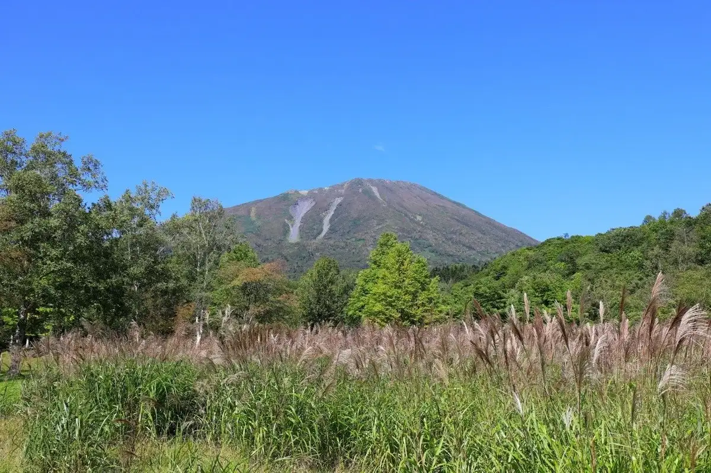
Stay
ニセコ羊蹄山南麓ときどき移住の家はなひまわり
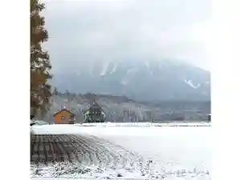
Niseko Youtei Sannan Fumoto Tokidoki Ijuu No Ie Hanahimawari
EL CAMINO Makkari（エルカミーノ真狩）
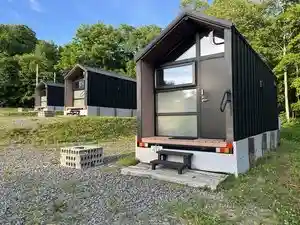
El Camino Makkari ( Erukamiino Makkari )
Dining
くらぱん
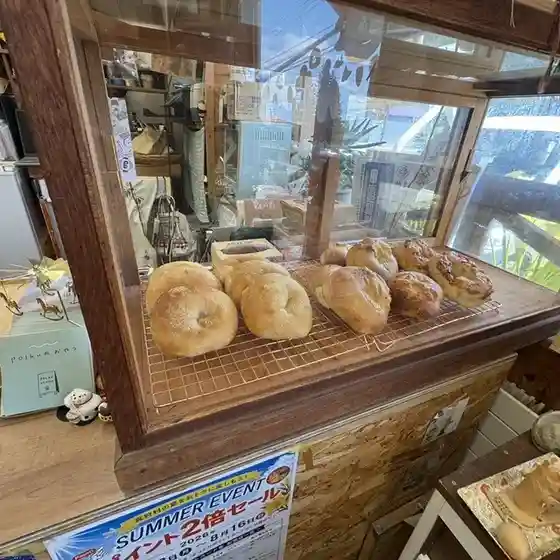
Kurapan
丘の上のレストランPomme
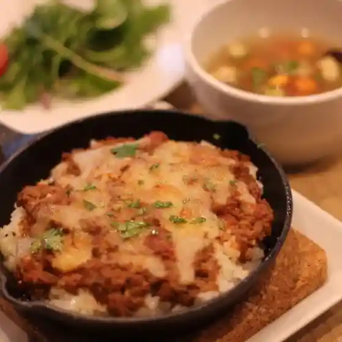
Oka No Ueno Resutoran Pomme
セイコーマート 真狩店
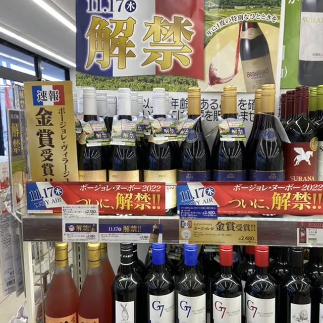
Seikoomaato Makkari Mise
トゥルモン
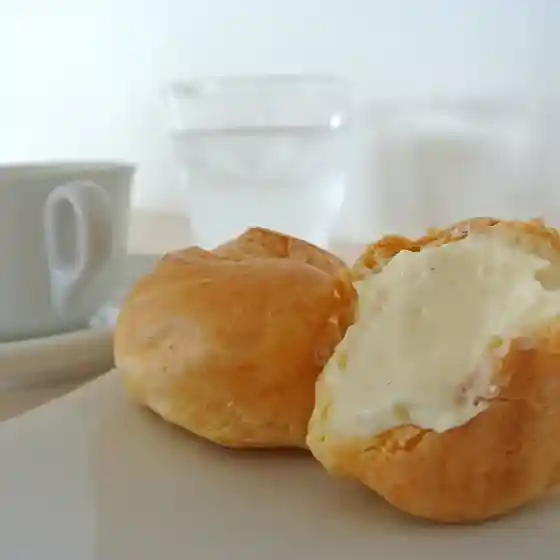
Tourumon
真狩BASE
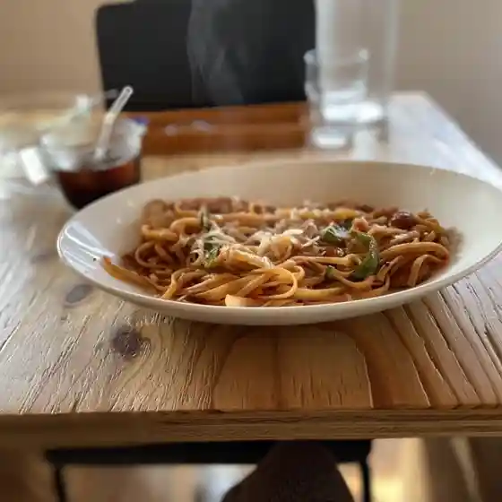
Makkari Base
ロバヲのマフィン
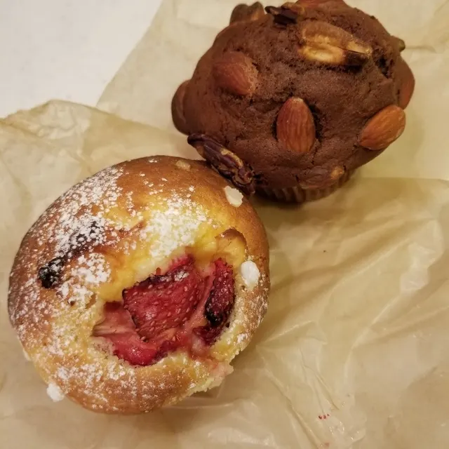
Robawo No Mafin
まっかりユースホステル
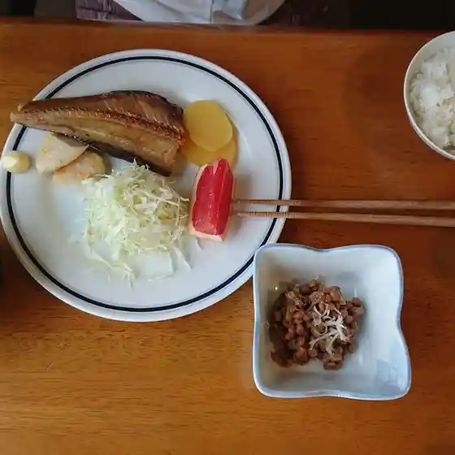
Makkari Yuusuhosuteru
コロッケ リリー
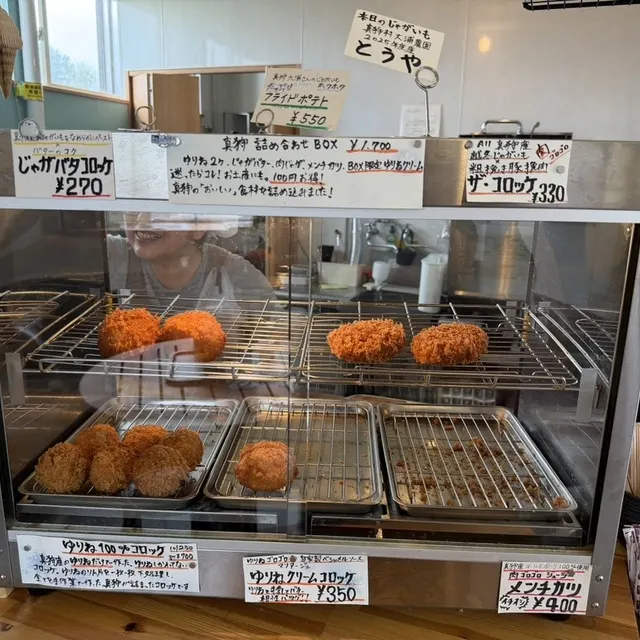
Korokke Ririi
レストラン・マッカリーナ
Resutoran Makkariina
いし豆
Ishi Mame
cafe とみや
Cafe Tomiya
道の駅 真狩フラワーセンター
Michi No Eki Makkari Furawaasentaa
いろり
Irori
ごとう農園
Gotou Nouen
ブーランジェリー ジン
Buuranjierii Jin
たから
Takara
だんごのころみや
Dangonokoromiya
まっかり温泉
Makkari Onsen
La・La
La La
カフェ 森の詩
Kafe Mori No Shi
ニセコラーメン ポテラ
Nisekoraamen Potera
食堂 山びこ
Shokudou Yama Biko
湧水の里
Yuusui No Sato
ポルク
Poruku
Sights
Yotei Mountain Nature Park
Yotei Mountain Nature Park